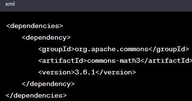
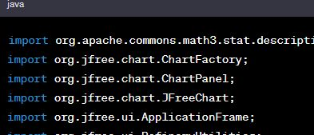

CAPITOLUL 2
Analiza statistica in Java
În acest capitol, vom explora modul în care Java poate fi utilizat pentru analiza statistică a datelor, implementarea algoritmilor și metodelor specifice pentru a extrage informații semnificative din seturile de date.Examinand cazuri de utilizare concrete si prezentand exemple practice pentru a evidentia aplicabilitatea acestor concepte in dezvoltarea de aplicatii.In dezvoltarea metodelor de analiza statica se utilizeaza bibliotecile de analiza(Apache Commons,Math,JAMA,JFreeChart).
Exemplu de implementare:
 Acest cod creeaza un grafic cu bare pentru a reprezenta media si deviatia standard a setului de date.Afisarea grafica prezinta o diagrama cu valorile calculate ex(analiza datelor financiare).
* * * Implementarea Algoritmilor de Analiza Statica * * * Exploreaza aspectele practice ale aplicarii conceptelor de analiza statistica intr-un mediu de programare.Accentul se pune pe doua aspecte fundamentale: Calculul mediei si deviatia standard
Calculul Deviatiei Standard
Deviația standard este o măsură a dispersiei datelor și indică cât de variabile sunt valorile față de media lor. Implementarea algoritmului pentru calculul deviației standard în limbajul de programare Java este prezentată în detaliu, oferind o perspectivă practică asupra modului în care această măsură poate fi aplicată în analiza statistică.
Calculul Mediei
Un prim pas esențial în analiza datelor statistice este determinarea mediei. Media reprezintă punctul central al unui set de date și se obține prin suma tuturor valorilor împărțită la numărul de valori. În cadrul capitolului, se detaliază un algoritm simplu de calcul al mediei, furnizând o bază solidă pentru înțelegerea conceptului